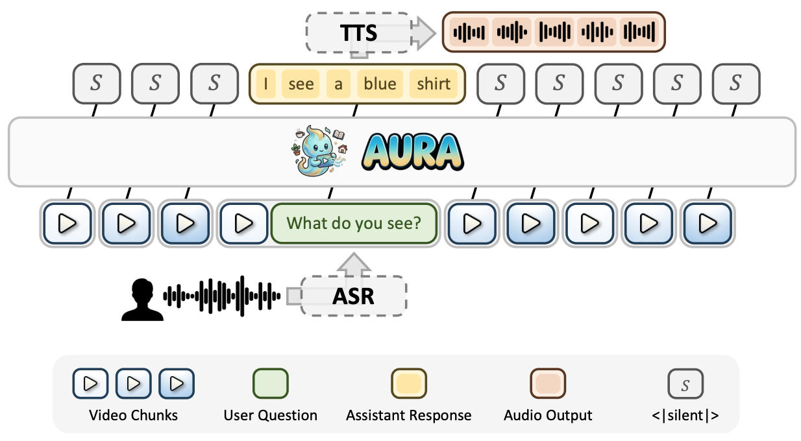

ICLR 2027 submissionMODEL & SYSTEM
AURA: Always-On Understanding and Real-Time Assistance via Video Streams
* Equal contribution · Co-first authors
An end-to-end streaming visual interaction framework for continuous observation, real-time question answering, and proactive responses.
Research summary
AURA combines streaming context management, a coarse-to-fine data engine, a silent-speech balanced training objective, and an inference framework for long-horizon interaction.